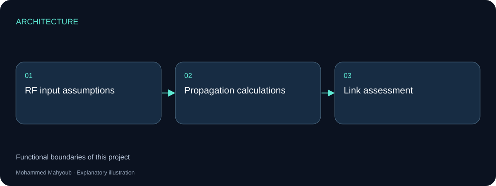
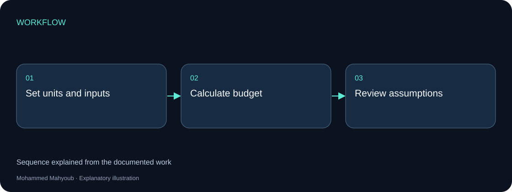

Engineering Software · RF Analysis
RF Link Budget & Propagation Analysis Engine
Developed a VB.NET engineering calculator for path loss, link budget, receiver sensitivity, thermal noise and RF propagation analysis.
Implemented Project
System architecture

Implementation scope
The tool relates transmit power, antenna gains and propagation loss to the receive level used in link assessment. Its screenshot belongs to a standalone calculator rather than the monitoring application.
Engineering approach
A link budget must be read with its input units and propagation assumptions. It supports engineering decisions; the calculator screenshot alone is not a measured field link result.

Reading the original calculation panel
The poster shows transmit / receive endpoints and inputs for frequency, distance, antenna heights, transmit power, antenna gains, cable and polarization losses, system margin, terrain and the effective-Earth factor. Results are grouped into path loss, Fresnel clearance, link budget, receiver sensitivity and a received-power chart.
Proposed calculation boundaries
Separate the mathematical engine from WinForms button events. Validate positive frequency and distance, normalize units and record the model and assumptions with every result. Models named in the poster are not interchangeable: each model must enforce its applicable frequency, environment and geometry domain.
FSPL (dB) = 32.44 + 20 log10(f in MHz) + 20 log10(d in km)
EIRP (dBm) = Pt + Gt − Lt
Pr (dBm) = Pt + Gt + Gr − Lt − Lr − Lpath − Lother
Available margin (dB) = Pr − receiver sensitivity
Noise at ~290 K (dBm) ≈ −174 + 10 log10(B in Hz) + NF
Gains are dBi; losses and margins are dB; absolute powers and sensitivity are dBm. Show available margin and the remainder after the required fade margin separately. Keep datasheet sensitivity distinct from a sensitivity calculated from noise and required SNR.
Recalculation of the displayed example
For 5800 MHz and 5.02 km, with 20 dBm transmit power, 15 dBi gain at each end and 1 dB cable loss at each end, assuming free-space propagation and no other losses:
| Quantity | Poster | Recalculated |
|---|---|---|
| EIRP | 34 dBm | 34 dBm |
| FSPL | 120.535 dB | 121.72 dB |
| Received power | −72.535 dBm | −73.72 dBm |
| Margin above −85 dBm sensitivity | About 12.46 dB | 11.28 dB |
| Remainder after 10 dB target | Not separately defined | 1.28 dB |
The displayed received power agrees with the displayed loss, but that loss does not agree with the visible frequency and distance. This is a discrepancy in the poster; without application source it does not identify the cause or prove a software defect. The original image is preserved as source evidence.
At 20 MHz bandwidth and 5 dB noise figure, equivalent receiver noise is approximately −95.99 dBm. The poster’s roughly −101 dBm value corresponds to thermal noise before adding noise figure. Label the two quantities separately. A required SNR of 10 dB gives a calculated sensitivity of about −85.99 dBm.
Reference checks
Doubling distance or frequency should increase free-space loss by about 6.02 dB; adding 1 dB cable loss should reduce received power by 1 dB. Equivalent unit conversions must preserve the result.
Equation reference: ITU-R P.525: free-space attenuation. Its rounded 32.4 constant explains only a small rounding difference.
Source context
Original project posters and interface screenshots are identified separately from explanatory source diagrams. The gallery documents this project only. Open any figure to inspect it at full available resolution.